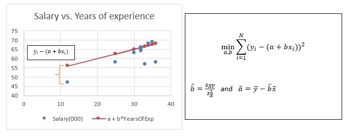
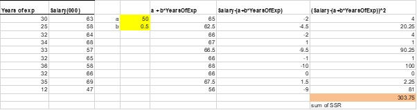
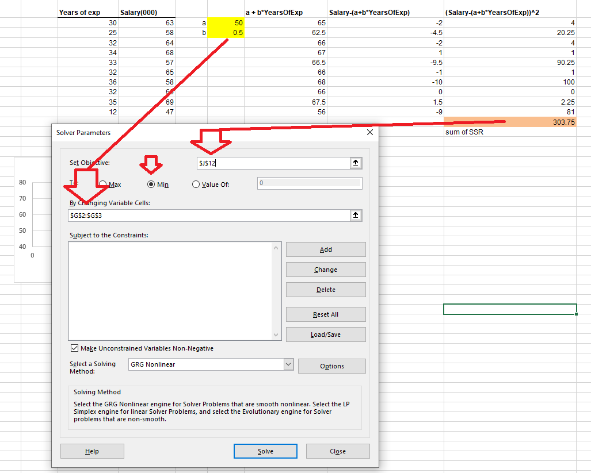
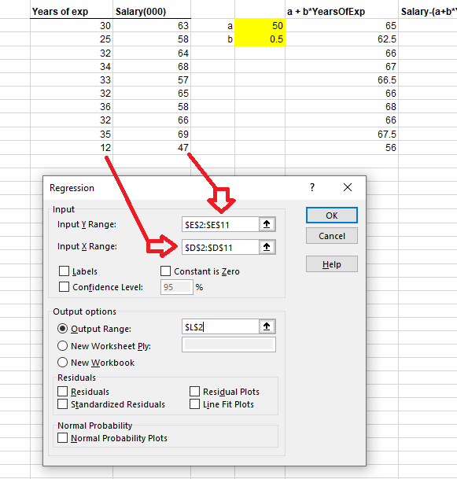
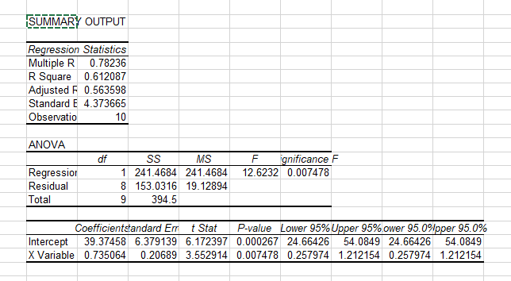
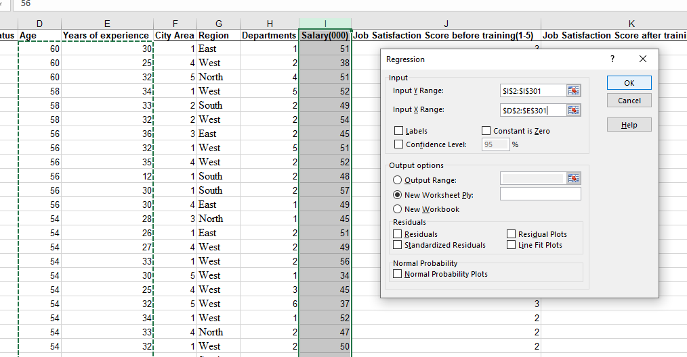
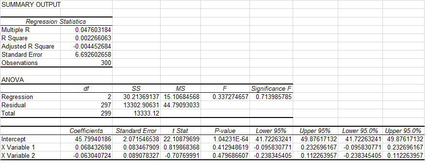

Lecture 11 Regression
Concepts:
regression, linear regression model, least square method, coeffiicent of determination11.1 Motivation of Simple Regression
Regression analysis is one of the most commonly used statistical techniques in business research. It is about to find a linear relation between two (or more) variables. For example examining the scatter plot of Years of experience versus Age reveals a positively correlation between these variables. The correlation coefficient is 0.89 confirms the positive relationship. Often, we represent this relationship with a line. How do we determine this line?
In 1795 Gauss developed the least squares method. This mehtod involves choosing the line that minimises the sum of the squared distance between data point and the line.
 ## 6.2 Least squares method
Excel demonstration of the least square (LS) method:


Alternatively, we can use EXCEL regression function to obtain the regression parameters.

Least Square Methd and Regression Line
In the following interactive diagram
- you can move the data points to se how the regression line follows the data points.
- change the slope and the the intercept of the green line to see how the sum of squared differences change.
- Verify the the regression line in obtained by choose the slope and the intercept such that the sum of squared differences is minimised.
- Move the point to investigate the impact of an outlier point on the regression line.
11.2 Statistics in a regression model
The least-square method can be applied to data to obtain the regression line. How can we judge the reliability of the regression line? How can we make sure that the regression line is not a product of randomness but reflects a substantial relation between the variables? What are the statistics in the regression output?
To assess the statistical property of the regression line, we need to add some probability assumptions to the regression model:
\[y_{i} = a + bx_{i} + u_{i}\]
Assumption 1: \(u_{i}\sim\text{iid}\ N(0,\sigma^{2})\) , where iid is the abbreviation of independently and identically distributed.
With this assumption we can calculate for the LS estimation:
\[\widehat{b} - b = (\sum_{i = 1}^{N}\left( x_{i} - \overline{x} \right)^{2})^{- 1}\sum_{i = 1}^{N}{\left( x_{i} - \overline{x} \right)u_{i}}\ \]
This implies \(\widehat{b} - b\sim N\left( 0,s_{X}^{- 2}\sigma^{2} \right)\). This provides a way to test \(H_{0}:b = 0\) vs. \(H_{0}:b\ \neq 0\). Rejection of the null hypothesis implies that the variable X has really an impact on the variable Y. In this way we can assess the reliability of the regression equation, and this is also how we interpret the regression output.
11.3 Interpretation of the Excel regression output

Regression equation: \(y_{i} = a + bx_{i} + u_{i}\) with a = 39.37 and b = 0.73, y is Years of experience, x is Age.
\(H_{0}:a = 0\ \)vs. \(H_{1}:a \neq 0\), p–value is 0.000267 < 0.05, reject the \(H_{0}:a = 0\).
\(H_{0}:b = 0\ \)vs. \(H_{1}:b \neq 0\), p value is 0.00747<0.05, reject \(H_{0}:a = 0\). This implies x influences y.
\(H_{0}:b_{1} = 0,\ \ldots.,\ b_{k} = 0\ \)vs. \(H_{1}:at\ least\ one\ b_{j} \neq 0\), p value is 0.00747<0.05, reject \(H_{0}:b_{1} = 0\).
This implies that in independent variables x influences the dependent y.
R Square is 0.61 implying the linear relation is fairly good. R=\(\pm\)1 is perfect linear relation.
For a good linear model, we can use the regression equation to predict y for a given x value. E.g. For Years of Exp = 30, we have \(Y\ = \ 39.37 + 0.73 \times 30\)=61.27, meaning an employee with 30 years of experience has on average a salary of $61.27K.
11.4 Multiple Regression
\(y_{i} = a + b_{1}x_{1i} + b_{2}x_{2i} + \ldots + b_{k}x_{\text{ki}} + u_{i}\)
is applicable for the case in which there are more than one influencing variables. This is why it called multiple regression.


- Regression equation: \(y_{i} = a + {b_{1}x}_{1i} + {b_{2}x}_{2i} + u_{i}\) with \(\widehat{a} = 45.80\),
\({\widehat{b}}_{1} = 0.068,\) and \({\widehat{b}}_{2} = - 0.063\). \(y\) is Salary, \(x_{1}\) is Age and \(x_{2}\) is Years of experience.
\(H_{0}:a = 0\ \)vs. \(H_{1}:a \neq 0\), p–value is 1.04e-64 < 0.05, reject the \(H_{0}:a = 0\). Sometimes we say the independent variable is insignificant.
\(H_{0}:b_{1} = 0\ \)vs. \(H_{1}:b_{1} \neq 0\), p-value is 0.41>0.05, No Rejection of \(H_{0}:b_{1} = 0\). This implies Age has no influences on Salary.
\(H_{0}:b_{2} = 0\ \)vs. \(H_{1}:b_{2} \neq 0\), p value is 0.47>0.05, No Rejection of \(H_{0}:b_{2} = 0\). This implies Years of Experience has no influences on Salary.
\(H_{0}:b_{1} = 0,\ b_{2} = 0\ \)vs. \(H_{1}:at\ least\ one\ b_{j} \neq 0\), p value is 0.71, No rejection
\(H_{0}:b_{1} = 0,\ b_{2} = 0\ \), implying that in independent variables do not influence the dependent y. i.e. the regression model does make sense.
R Square is 0.047 implying the linear relation is very weak. R Square =\(0\) implies there is no linear relation between y and xs.
When the independent variables are insignificant, we should not use the linear model for prediction.
11.5 Multivariate Regression
Often we want to assess the impact of one set of variables X on the other set variables Y. This is Multivariate regression. It
\(y_{\text{ij}} = a + b_{1j}x_{1i} + b_{2j}x_{2i} + \ldots + b_{\text{kj}}x_{\text{ki}} + u_{\text{ij}}\) for \(j = 1,2,\ldots,M\)
We have here M multiple regressions with the same set of independent variables. The implement of the multivariate regression is simply by run M times the multiple regressions. The interpretation of the results is done equation b equation.